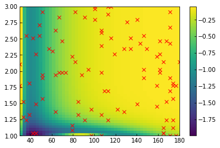
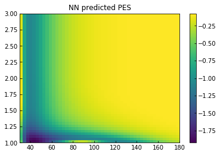
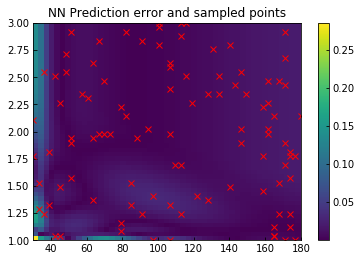
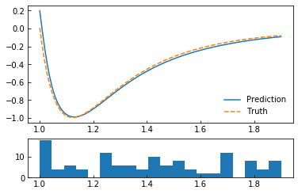

Learning a LJ potential¶
This notebook showcases the usage of PiNN with a toy problem of learning a Lennard-Jones potential with a hand-generated dataset.
It serves as a basic test, and demonstration of the workflow with PiNN.
[1]:
%matplotlib inline
[2]:
import os, warnings
import numpy as np
import tensorflow as tf
import matplotlib.pyplot as plt
from ase import Atoms
from ase.calculators.lj import LennardJones
os.environ['CUDA_VISIBLE_DEVICES'] = ''
index_warning = 'Converting sparse IndexedSlices'
warnings.filterwarnings('ignore', index_warning)
# Turn off the tf INFOs
tf.logging.set_verbosity('ERROR')
Reference data¶
[3]:
# Helper function: get the position given PES dimension(s)
def three_body_sample(atoms, a, r):
x = a * np.pi / 180
pos = [[0, 0, 0],
[0, 2, 0],
[0, r*np.cos(x), r*np.sin(x)]]
atoms.set_positions(pos)
return atoms
[4]:
atoms = Atoms('H3', calculator=LennardJones())
na, nr = 50, 50
arange = np.linspace(30,180,na)
rrange = np.linspace(1,3,nr)
# Truth
agrid, rgrid = np.meshgrid(arange, rrange)
egrid = np.zeros([na, nr])
for i in range(na):
for j in range(nr):
atoms = three_body_sample(atoms, arange[i], rrange[j])
egrid[i,j] = atoms.get_potential_energy()
# Samples
nsample = 100
asample, rsample = [], []
distsample = []
data = {'e_data':[], 'f_data':[], 'elems':[], 'coord':[]}
for i in range(nsample):
a, r = np.random.choice(arange), np.random.choice(rrange)
atoms = three_body_sample(atoms, a, r)
dist = atoms.get_all_distances()
dist = dist[np.nonzero(dist)]
data['e_data'].append(atoms.get_potential_energy())
data['f_data'].append(atoms.get_forces())
data['coord'].append(atoms.get_positions())
data['elems'].append(atoms.numbers)
asample.append(a)
rsample.append(r)
distsample.append(dist)
[5]:
plt.pcolormesh(agrid, rgrid, egrid)
plt.plot(asample, rsample, 'rx')
plt.colorbar()
[5]:
<matplotlib.colorbar.Colorbar at 0x7fb376792490>

Dataset from numpy arrays¶
[6]:
from pinn.models import potential_model
from pinn.networks import pinet
from pinn.io import sparse_batch, load_numpy
from pinn.calculator import PiNN_calc
[7]:
data = {k:np.array(v) for k,v in data.items()}
dataset = lambda: load_numpy(data)
train = lambda: dataset()['train'].shuffle(100).repeat().apply(sparse_batch(100))
test = lambda: dataset()['test'].repeat().apply(sparse_batch(100))
Training¶
Model specification¶
[8]:
params={
'model_dir': '/tmp/PiNet_toy',
'network': 'pinet',
'network_params': {
'ii_nodes':[8,8],
'pi_nodes':[8,8],
'pp_nodes':[8,8],
'en_nodes':[8,8],
'depth': 4,
'rc': 3.0,
'atom_types':[1]},
'model_params':{
'e_dress': {1:-0.3}, # element-specific energy dress
'e_scale': 2, # energy scale for prediction
'e_unit': 1.0, # output unit of energy dur
'log_e_per_atom': True, # log e_per_atom and its distribution
'use_force': True, # include force in Loss functiona
}}
model = potential_model(params)
[9]:
#%rm -r /tmp/PiNet_toy/ # Uncomment to trash previous model
train_spec = tf.estimator.TrainSpec(input_fn=train, max_steps=5e3)
eval_spec = tf.estimator.EvalSpec(input_fn=test, steps=10)
tf.estimator.train_and_evaluate(model, train_spec, eval_spec)
WARNING: The TensorFlow contrib module will not be included in TensorFlow 2.0.
For more information, please see:
* https://github.com/tensorflow/community/blob/master/rfcs/20180907-contrib-sunset.md
* https://github.com/tensorflow/addons
If you depend on functionality not listed there, please file an issue.
Total number of trainable variables: 3144
[9]:
({'METRICS/E_LOSS': 0.008069426,
'METRICS/E_MAE': 0.04427933,
'METRICS/E_PER_ATOM_MAE': 0.014759785,
'METRICS/E_PER_ATOM_RMSE': 0.029943338,
'METRICS/E_RMSE': 0.08982998,
'METRICS/F_LOSS': 0.11433614,
'METRICS/F_MAE': 0.08721062,
'METRICS/F_RMSE': 0.3381363,
'METRICS/TOT_LOSS': 0.12240557,
'loss': 0.12240557,
'global_step': 5000},
[])
Validate the results¶
PES analysis¶
[10]:
atoms = Atoms('H3', calculator=PiNN_calc(model))
epred = np.zeros([na, nr])
for i in range(na):
for j in range(nr):
a, r = arange[i], rrange[j]
atoms = three_body_sample(atoms, a, r)
epred[i,j] = atoms.get_potential_energy()
[11]:
plt.pcolormesh(agrid, rgrid, epred)
plt.colorbar()
plt.title('NN predicted PES')
plt.figure()
plt.pcolormesh(agrid, rgrid, np.abs(egrid-epred))
plt.plot(asample, rsample, 'rx')
plt.title('NN Prediction error and sampled points')
plt.colorbar()
[11]:
<matplotlib.colorbar.Colorbar at 0x7fb28c198ad0>


Pairwise potential analysis¶
[12]:
atoms1 = Atoms('H2', calculator=PiNN_calc(model))
atoms2 = Atoms('H2', calculator=LennardJones())
nr2 = 100
rrange2 = np.linspace(1,1.9,nr2)
epred = np.zeros(nr2)
etrue = np.zeros(nr2)
for i in range(nr2):
pos = [[0, 0, 0],
[rrange2[i], 0, 0]]
atoms1.set_positions(pos)
atoms2.set_positions(pos)
epred[i] = atoms1.get_potential_energy()
etrue[i] = atoms2.get_potential_energy()
[13]:
f, (ax1, ax2) = plt.subplots(2,1, gridspec_kw = {'height_ratios':[3, 1]})
ax1.plot(rrange2, epred)
ax1.plot(rrange2, etrue,'--')
ax1.legend(['Prediction', 'Truth'], loc=4)
_=ax2.hist(np.concatenate(distsample,0), 20, range=(1,1.9))

Molecular dynamics with ASE¶
[14]:
from ase import units
from ase.io import Trajectory
from ase.md.nvtberendsen import NVTBerendsen
from ase.md.velocitydistribution import MaxwellBoltzmannDistribution
[15]:
atoms = Atoms('H', cell=[2, 2, 2], pbc=True)
atoms = atoms.repeat([5,5,5])
atoms.rattle()
atoms.set_calculator(PiNN_calc(model))
MaxwellBoltzmannDistribution(atoms, 300*units.kB)
dyn = NVTBerendsen(atoms, 0.5 * units.fs, 300, taut=0.5*100*units.fs)
dyn.attach(Trajectory('ase_nvt.traj', 'w', atoms).write, interval=10)
dyn.run(5000)
[15]:
True